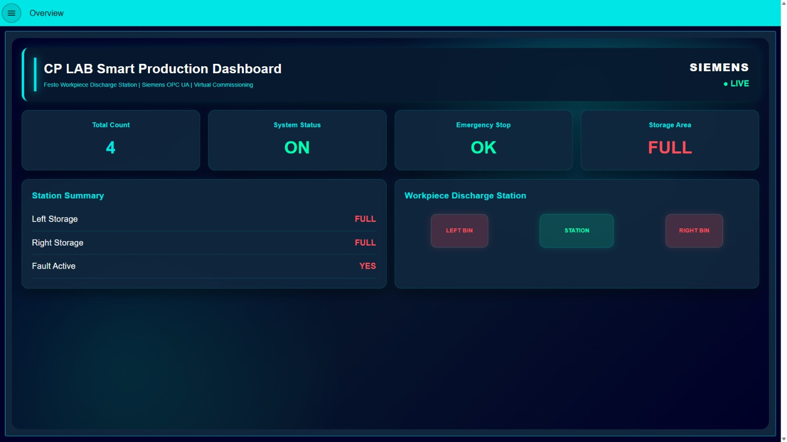
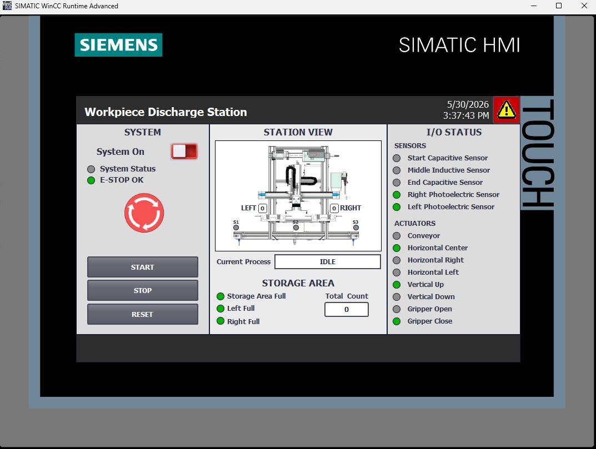
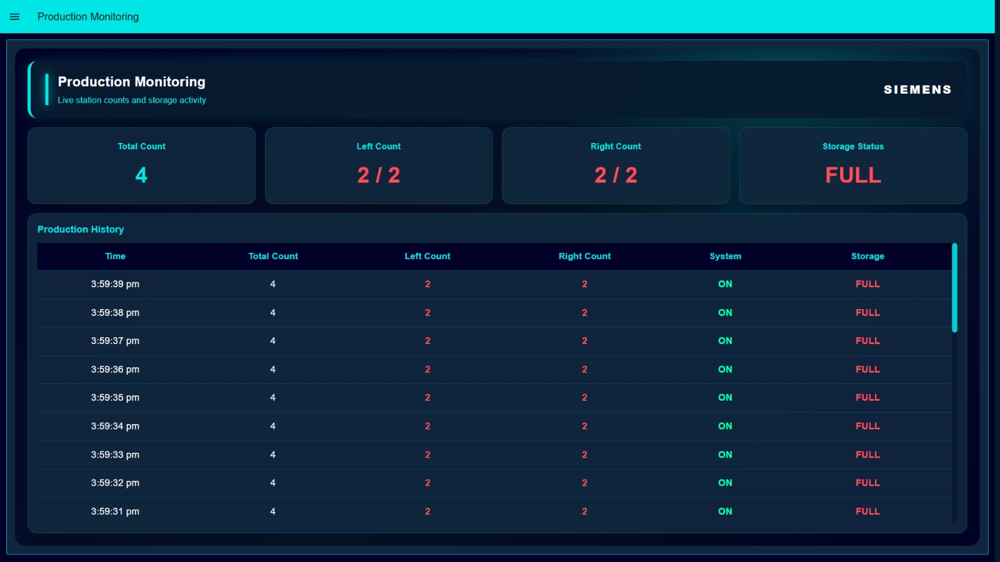
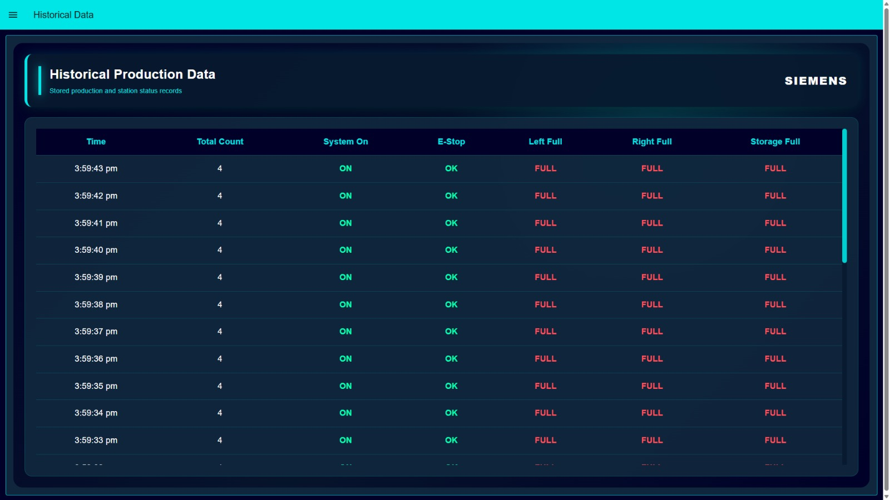
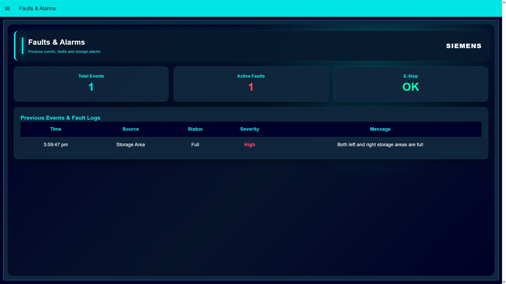
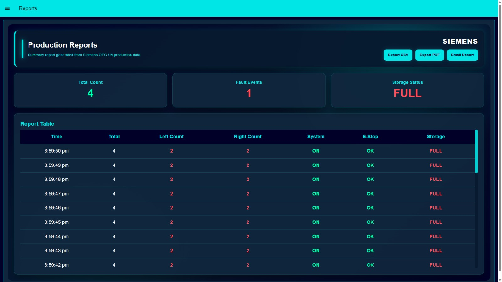

Overview
Shows total count, system state, emergency stop status, storage availability and a station mimic.
Digital twin validation, PLC control, real-time monitoring and automated reporting for a FESTO Workpiece Discharge Station.
Explore ProjectThis project demonstrates the development of a Siemens-focused smart production monitoring system for a FESTO CP Lab Workpiece Discharge Station. The solution combines virtual commissioning, PLC simulation, WinCC HMI development, OPC UA communication and a Siemens-themed Node-RED dashboard to create a complete Industry 4.0 workflow.
Digital validation of station movement, sensors, actuators and sequence logic before physical deployment.
Real-time data communication between Siemens PLC variables and the Node-RED dashboard.
Live total count, left/right storage count, system status, E-stop status and storage availability.
CSV, PDF and email reporting to support traceability, documentation and decision-making.
Traditional commissioning can expose logic errors, sensor faults and sequence problems late in the development process. These issues may increase downtime, delay deployment and create unnecessary engineering cost. This project addresses that problem by validating the system virtually first, then presenting real-time operational data through a modern industrial dashboard.
Operators need clear access to production count, storage status and system health in one location.
Commissioning problems should be found digitally before they affect the real production system.
Production data should be automatically recorded and exported instead of being manually written down.
The system architecture connects the virtual model, PLC control logic, HMI interface and dashboard layer. Siemens NX Mechatronics Concept Designer represents the station digitally, TIA Portal manages PLC control, S7-PLCSIM Advanced simulates the controller, WinCC Runtime Advanced provides HMI operation and Node-RED visualises the production data through OPC UA.
Digital twin and station behaviour
PLC control logic and sequence
Virtual PLC execution
Industrial data communication
Dashboard, logs and reports
A virtual commissioning model was developed to replicate the FESTO Workpiece Discharge Station before final deployment. The model includes the conveyor, horizontal and vertical movements, gripper, storage areas, sensors and actuator behaviour. This enabled PLC logic testing, sequence validation and fault checking in a safe digital environment.


Sliding and fixed joints were used to represent horizontal, vertical, gripper and conveyor movement.
Start, middle, end and storage sensors were represented to provide feedback to PLC logic.
The digital model was used to verify workpiece transfer, storage selection and reset behaviour.
Faults and logic issues could be identified before connecting the system to a real workstation.
A Siemens WinCC HMI was created to monitor the station and support operator interaction. The HMI includes system control buttons, sensor status, actuator status, production count, storage full indicators and emergency stop monitoring.

Siemens WinCC Runtime Advanced HMI for the Workpiece Discharge Station.The Node-RED dashboard was designed with a Siemens-inspired dark navy and cyan visual theme. It converts raw OPC UA data into meaningful production information for operators, engineers and assessors.

Shows total count, system state, emergency stop status, storage availability and a station mimic.

Displays live production count, left/right storage counts and recent production history.

Stores timestamped production and status records for review and traceability.

Tracks active faults, emergency stop status and event logs with severity levels.

Provides CSV export, PDF generation and email reporting for production data.
The demonstration video presents the complete workflow, showing the virtually commissioned station, HMI operation and dashboard monitoring system working together.
The final system demonstrates a complete smart manufacturing workflow: virtual commissioning, Siemens PLC simulation, HMI operation, OPC UA data exchange, real-time dashboard monitoring, alarm logging and automated reporting.
The project successfully links control logic, HMI, simulated station behaviour and a modern dashboard into one connected engineering solution.
When live hardware was not available, realistic simulated data was used to continue dashboard testing and reporting validation.
The system could be expanded with OEE calculations, cloud connectivity, Siemens Industrial Edge and predictive maintenance analytics.
This project strengthened practical understanding of Siemens automation tools, virtual commissioning principles, OPC UA communication, dashboard design and production reporting. It shows how digital tools can reduce commissioning risk while improving production visibility and decision-making.